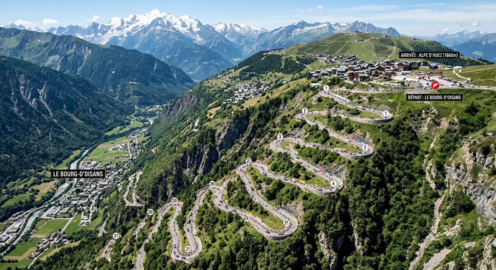

Cobblestone Fantasy Cycling 🚴♂️
Welcome to my fantasy cycling zone! Here I track road racing tactics, Grand Tour statistics, and spring classics predictions.

Grand Tours & Iconic Climbs
From the iconic 21 hairpin bends of Alpe d'Huez in the French Alps to the grueling cobbles of Paris-Roubaix, following world-class pro cycling is all about strategy, endurance, and terrain analysis.
Image Setup: Save the bird's-eye photo above as alpe-dhuez.jpg and upload it to your GitHub repository alongside this updated file.